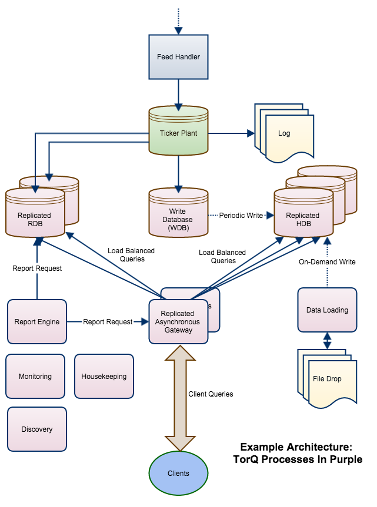

Architecture
This section will be used to describe the different features included within the Finance Starter Pack. For more information on TorQ implementation details you can refer to the TorQ Manual, review the code which comprises the system or contact us at info@dataintellect.com.
Processes
The architecture of the demo system is as below.

Feed
The feed comprises two randomly generated tables, trade and quote. These tables have ’ticks’ generated by feed.q which are pushed to the tickerplant in batches every 200 milliseconds. A large batch is pushed initially then smaller batches after it. The timestamps are local time.
The schema definitions can be seen below and can also be viewed in the file tick/database.q which will be located under the directory you extract the TorQ and Starter Pack files to.
quote:([]time:`timestamp$(); sym:`g#`symbol$(); bid:`float$(); ask:`float$(); bsize:`long$(); asize:`long$(); mode:`char$(); ex:`symbol$())
trade:([]time:`timestamp$(); sym:`g#`symbol$(); price:`float$(); size:`int$(); stop:`boolean$(); cond:`char$(); ex:`symbol$())
meta quote
c | t f a
-----| -----
time | p
sym | s g
bid | f
ask | f
bsize| j
asize| j
mode | c
ex | s
meta trade
c | t f a
-----| -----
time | p
sym | s g
price| f
size | i
stop | b
cond | c
ex | s
RDB
The RDB is a TorQ process which holds data for the current GMT day in memory. Unlike kdb+tick, it does not persist data to disk at end-of-day.
WDB and Sort Processes
The WDB is a specilized database process which subscribes to a tickerplant and periodically persists data to disk. At EOD this data is used to create the HDB partition. It has been configured to operate in conjuction with a sorting process which sorts the data it writes to disk.
The sorting process is configured to sort by sym(p#) and time, although this can be configured on a per-table basis in $KDBCONFIG/sort.csv
Gateway
The gateway connects to the RDB and HDB processes and runs queries against them. It can access a single process, or join data across multiple processes. It also does load balancing and implements a level of resilience by hiding back end process failure from clients. Later in this document in the Have a Pay chapter a number of example queries are provided which demonstrate the functionality of the gateway process
Report Engine
The Report Engine runs queries on a schedule against specific back end processes, including gateways. Once the report is complete the result can be further processed, with available actions such as emailing it out or writing it to a file. This has been used to implement some basic monitoring checks and run some end of day reports. The configuration file is in $KDBCONFIG/reporter.csv.
Housekeeping
The housekeeping process is used to maintain some of the files written to disk by TorQ. In the demo we use it to archive tplogs and both archive and eventually remove log files from the TorQ working directories.
The process has been configured like so:
zip,{KDBLOG}/,*.log,,10
rm,{KDBLOG}/,*.gz,,30
zip,{KDBTPLOG}/,database20*,,1
The first line can be translated to mean ’Compress the files in the KDBLOG/ path, matching the *.log pattern, excluding no files and where the files are older than 10 days’
Combined with the other lines, the system will compress process logs after 10 days, delete compressed process logs after 30 days and compress tplogs after 1 day.
The compression process will check for work to be done everyday at 0200 local time.
Compression
The compression process is used to periodically scan the hdb directory for columnar binary files to compress. The compression settings are defined in $KDBCONFIG/compressionconfig.csv. This allows configuration of compression parameters on a per table, column and age basis.
It is intended to be used with a scheduling program like cron. By default it is a transient process as it will start up, check for files to compress, does any work required and then dies.
Discovery
The discovery process is used by the other processes to locate other processes of interest, and register their own capabilities.
Monitor
The monitor process is a basic monitoring process to show process avaiability via heartbeating, and to display error messages published by other processes.
Metrics
A simple metrics engine is provided as an example of a real-time subscriber process. This process subscribes to updates from the tickerplant, and provides TWAP and VWAP metrics for configurable time windows. On connection it subscribes to the tickerplant and attempts to recover relevant data up until that point from the RDB.
The settings are shown here:
| Settings | Type | Description |
|---|---|---|
| .metrics.windows | timespan (list) | List of time windows over which to perform metrics |
| .metrics.enableallday | boolean | Boolean to enable the "all day" window in addition to above windows |
What Advantages Does This Give Me?
A standard kdb+tick set up is great for a lot of installations but some customers have modified it substantially to fit their needs.
End Of Day
In a standard kdb+tick setup, the end-of-day event is time consuming and the data is unavailable as it is written from the RDB memory to the HDB disk. With the above setup, this outage is minimized in the following ways:
-
Faster end-of-day as data is written periodically to disk throughout the day
-
No back-pressure (slow subscriber problem) on the tickerplant as the RDB doesn’t write to disk, and the WDB doesn’t do the time consuming sort on the data
-
“Yesterday’s” data is available in the RDB until the end-of-day operation is complete, meaning no data outage
Gateway: Resilience, Load Balancing and Parallel Access
kdb+tick doesn’t include a gateway as standard. There are some examples on code.kx, but production gateways are generally non trivial to write. The TorQ gateway ensures
-
Backend processes can be replicated as required. If one process fails, another will take over transparently to the client
-
New processes can be started intraday and will be automatically available via Discovery Service notifications
-
Queries are run in parallel and load balanced across back end processes- multiple clients can query at once
Supportability
TorQ adds a layer of standard tools to aid system supportability on top of kdb+tick.
-
Common directories for loading code in a fault tolerant way
-
Output and error log messages are timestamped and standardized
-
Log messages can be published to external applications
-
All client queries are logged and timed, and can be externally published
-
Monitoring checks are incorporated
-
Email notifications are incorporated
-
Housekeeping automatically executed